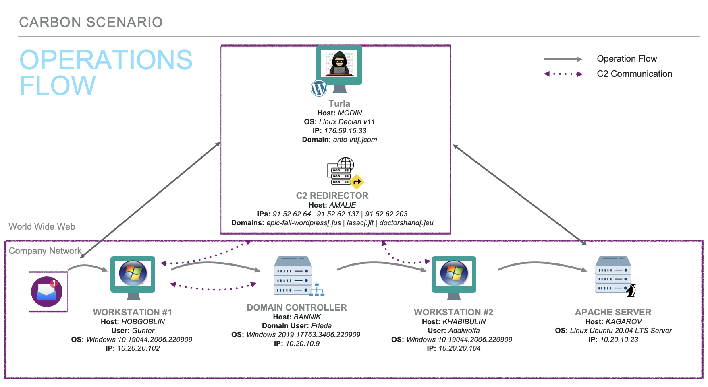

Based on open-source intelligence, the ATT&CK ® Evaluations team created the below scenario leveraging techniques seen from Turla in the wild. We have adapted the scenario based on tools and resources available at the time. Below is a scenario overview, step-by-step breakdown, and an infrastructure diagram.
#Overview
This scenario follows Turla’s multi-phase approach to implant a watering hole as a way to compromise more victims of interest. Turla gains initial access through a spearphishing email, a fake software installer is downloaded onto the victim machine and execution of the EPIC payload takes place. Once persistence and C2 communications are established, a domain controller is discovered, and CARBON-DLL is ingress into victim network. Further lateral movement takes the attackers to a Linux Apache server, PENGUIN is copied to the server and used to install a watering hole.
Phase 1: The scenario begins when the user Gunter visiting a typosquat domain via a spearphishing email. When the link is opened, a fake software installer is downloaded on Gunter’s Windows host machine. Gunter clicks “Install,” executing the malicious EPIC payload. EPIC establishes persistence and connects to a C2 server via a proxy web server using HTTP requests. The attacker’s enumeration on Gunter’s device, discovers a domain controller on the network and the domain admin Frieda.
Phase 2: To maintain persistence, the attackers will deploy CARBON-DLL and prepare to laterally move onto the domain controller. The use of password spraying helps to obtain Frieda’s domain admin credentials. Frieda’s credentials are then used to mount the DC’s hard drive, move a copy of CARBON-DLL to this drive, and execute the malware on the DC via remote scheduled task. A Linux Apache Server and the server’s admin Adalwolfa is discovered during enumeration. CARBON-DLL downloads Mimikatz and dumps Adalwolfa’s stored NTLM hash. Mimikatz and Adalwolfa’s NTLM hash are used to perform a pass-the-hash (PtH) attack allowing the attackers to authenticate into Adalwolfa’s device and copy CARBON-DLL to the workstation via PsExec.
Phase 3: On Adalwolfa’s workstation, a custom keylogger is dropped and captures plaintext SSH credentials. CARBON-DLL downloads the PENQUIN malware to Adalwolfa’s workstation, the SSH credentials allows the attackers to copy PENQUIN to the Apache server and execute the malware via plink. PENQUIN is utilized to install a watering hole causing users browsing a legitimate HTML site to be redirected to the malicious, attacker-controlled site.

Carbon Operations Flow Diagram
Carbon Software Flow Diagram
#Scenario Steps👣
Steps & Techniques
User Story
Commands
Analyst Notes
Software
Reporting
Step 1 Initial Compromise T1566.002: Phishing: Spearphishing Link T1204.002: User Execution: Malicious File T1036.004: Masquerading: Masquerade Task or Service T1574.007: Hijack Execution Flow: Path Interception by Path Environment Variable T1547.004: Boot Logon Autostart Execution: Winlogon Helper DLL
User Gunter (non-admin) receives a spearphishing email from noreply@sktlocal[.]it with a malicious link, http://www.anto-int.com. Believing the link to be a valid NATO-related site, Gunter clicks the link and is tricked into installing what appears to be a legitimate software installer. The malicious installer (NtFlashVersion.exe) drops EPIC onto Gunter’s Windows workstation.
CTI deviation: we simplified the delivery of EPIC for feasibility purposes. According to CTI, Turla previously delivered EPIC using Adobe exploits (CVE-2013-3346 & CVE-2013-5065) or watering hole attacks.
Step 2 Establish Initial Access T1027: Files or Information T1055.007: Injection: Dynamic-link Library Injection T1057: Discovery T1059.003: and Scripting Interpreter: Windows Command Shell T1087.001: Account Discovery: Local Account T1012: Query Registry T1082: Information Discovery T1124: System Time Discovery T1057: Process Discovery T1135: Network Share Discovery T1049: System Network Connections Discovery T1069.001: Permission Groups Discovery: Local Groups T1033: System Owner/User Discovery T1083: File and Directory Discovery T1560.002: Archive Collected Data: Archive via Library T1132.001: Data Encoding: Standard Encoding T1071.001: Application Layer Protocol: Web Protocols T1090.002: Proxy: External Proxy
EPIC will then be injected via DLL onto Gunter’s workstation. The implant will perform initial discovery commands, enumerating information about the user, host device, network, system, registry, directory, and running processes. EPIC will send this data to the C2 via a proxy web server using HTTP requests. This web server, which was initially used to download the Adobe Flash installer, hosts a fake WordPress-related domain.
EPIC will terminate itself upon discovering any of the following processes: tcpdump.exe windump.exe ethereal.exe wireshark.exe ettercap.exe snoop.exe dsniff.exe
WordPress domain: CTI shows Turla has utilized compromised legitimate WordPress sites and WordPress-focused URLs for C2 purposes (e.g., newsforum.servehttp[.]com/wordpress/wp-includes/css/img/upload.php)
Step 3 Discovery & Privilege Escalation T1033: System Owner/User Discovery T1007: System Service Discovery T1124: System Time Discovery T1049: System Network Connections Discovery T1135: Network Share Discovery T1016: System Network Configuration Discovery T1069.001: Permission Groups Discovery: Local Groups T1069.002: Permission Groups Discovery: Domain Groups T1012: Query Registry T1059.001: Command and Scripting Interpreter: PowerShell T1574.011: Hijack Execution Flow: Services Registry Permissions Weakness
Once C2 communications have been established between EPIC and the C2 via the proxy web server, the attackers will collect information about the host device, including: -Local/privileged groups -System services -System/Process discovery
At this point, the adversary will discover 2 crucial aspects on the network: -Domain controller -Domain admin accounts, including user Frieda
In order to escalate privileges, EPIC restarts itself as local system admin on Gunter’s workstation.
Step 4 Persistence T1105: Ingress Tool Transfer T1543.003: Create or Modify System Process: Windows Service T1112: Modify Registry T1569.002: System Services: Service Execution T1036.004: Masquerade Task or Service T1055.007: Injection: Dynamic-link Library Injection T1033: System Owner/User Discovery T1049: System Network Connections Discovery T1071.001: Application Layer Protocol: Web Protocols T1573.002: Encrypted Channel: Asymmetric Cryptography T1573.001: Encrypted Channel: Symmetric Cryptography T1132.001: Data Encoding: Standard Encoding T1074.001: Data Staged: Local Data Staging
Next, the attackers will deploy CARBON-DLL as a second-stage malware onto Gunter’s workstation in order to maintain persistence. CARBON-DLL, a variant of CARBON relying on DLLs and asymmetric encryption, will establish C2 communications via a redirector using HTTP requests. Once this communication channel is created, the malware will run a few discovery commands on Gunter’s device and drop several files to disk.
CARBON-DLL has the following components and functions: Installer - create subdirectories for staging, create services, and executes loader
Loader - written to a registry key path, runs under svchost and executes orchestrator
Orchestrator - injects communications library DLL into processes via HTTP
CARBON: ipconfig -all
netstat -r
netstat -an
nbtstat -n
nbtstat -s
net share
net file
net session
net use
net group
net view
net config
system info
net time \\127.0.0.1
C2 Comms Details: Internal: P2P, use of named pipes, worker drones received tasks via named pipes
External: use of HTTP requests, communication drones contacted C2s directly
Step 5 Lateral Movement to Domain Controller T1105: Ingress Tool Transfer T1059.003: Command and Scripting Interpreter: Windows Command Shell T1110.003: Brute Force: Password Spraying T1021.002: Remote Services: SMB/Windows Admin Shares T1070.004: Indicator Removal on Host: File Deletion T1570: Lateral Tool Transfer T1053.005: Scheduled Task/Job: Scheduled Task T1071: Application Layer Protocol T1069.002: Permission Groups Discovery: Domain Groups T1018: Remote System Discovery
Using the enumerated usernames, the adversary conducts password spraying. This process retrieves Frieda’s admin credentials to the local domain controller.
To laterally move onto the DC, the attackers will use Frieda’s stolen password to mount the DC’s C:\ drive, and downloads and moves a second copy of the CARBON-DLL installer to this drive. The implant will be executed via remote scheduled task and then establish communications with the C2 server by leveraging P2P with the first CARBON-DLL implant Gunter’s device out to the redirector.
While performing discovery on the DC, the adversary discovers the following network devices: 1. Remote Apache web server 2. Windows workstation for user Adalwolfa (admin on Apache server)
net use
EPIC has moved through the victim’s network using pre-defined passwords: net use \\NET-DC-01\C$ "P@ssw0rd" /user:MOFA\Administrator
Password spraying: CTI shows that EPIC has been used to conduct password spraying (see Report 1 for details)
Step 6 Preparation for Lateral Movement onto Second Host T1105: Ingress Tool Transfer T1003.004: Credential Dumping: LSA Secrets T1550.002: Alternate Authentication Material: Pass the Hash
Next, the attackers download Mimikatz (mmgaproxy.exe) to the DC and the attackers retrieve NTLM hash for admin user Adalwolfa.
Step 7 Lateral Movement to Second Workstation T1105: Tool Transfer T1550.002: Use Alternate Authentication Material: Pass the Hash T1070.004: Indicator Removal on Host: File Deletion
After obtaining the NTLM hash for user Adalwolfa, the attackers will move laterally to this user’s workstation. In order to do this, the threat actor will leverage the CARBON-DLL implant on the domain controller to download PsExec and another copy of the CARBON-DLL installer. To perform the lateral movement, CARBON-DLL performs a pass-the-hash (PtH) attack to move the installer onto Adalwolfa’s device. Finally, the attackers use PsExec to execute CARBON-DLL remotely on Adalwolfa’s Windows workstation.
Step 8 Credential Access on Admin Host [T1105https://attack.mitre.org/techniques/T1105/ Ingress Tool Transfer T1056.001: Input Capture: Keylogging T1059.001: Command and Scripting Interpreter: PowerShell T1021.004: Remote Services: SSH T1489: Service Stop T1041: Exfiltration over C2 Channel T1070.004: Indicator Removal on Host: File Deletion
Once the adversary has moved onto Adalwolfa’s computer, CARBON-DLL downloads a custom keylogger (winsvcxgt.exe). This tool allows the adversary to retrieve Adalwolfa’s plaintext SSH credentials during the user’s Chrome browser session.
Step 9 Lateral Movement to Linux Server T1105: Ingress Tool Transfer T1021.004: Remote Services: SSH T1053.003: Scheduled Task/Job: Cron T1078.002: Valid Accounts: Domain Accounts T1070.004: Indicator Removal on Host: File Deletion T1027: Obfuscated Files or Information T1222.002: File and Directory Permissions Modification: Linux and Mac File and Directory Permissions Modification T1036.005: Masquerading: Match Legitimate Name or Location T1543: Create or Modify System Process T1205: Traffic Signaling T1040: Network Sniffing
To begin the lateral movement onto the targeted Linux Apache server, CARBON-DLL downloads PENQUIN to Adalwolfa’s workstation. Using the stolen credentials previously retrieve by the keylogger, the attackers copy PENQUIN to the Apache server. PENQUIN will mimic the legitimate Linux cron utility and modify the service. Finally, plink will be downloaded and copied to execute PENQUIN on the Apache server.
CTI deviation: SSH was not utilized in Turla’s PENQUINx64 campaign, but has been used in other Turla attacks
PENQUINx64 variant: - Written in C/C++ - 64-bit architectures - Defense evasion: embeds legitimate Linux binary to mimic cron
Old versions of PENQUIN: - ELF 32-bit LSB exe - Intel 80386 version 1 (SYSV) - GNU/Linux 2.2.5 (stripped) - Does not require admin/root privileges to run - Requires 2 parameters: ID & existing network interface name
Essentially, there are commands that are integrated into PENQUINx64’s code. Each command code corresponds to a specific function which the malware then executes. A full list of these functions is listed on page 13 of the Leonardo Spa report.
Step 10 Installation of Watering Hole T1205: Traffic Signaling T1132.001: Data Encoding: Standard Encoding T1059.004: Command and Scripting Interpreter: Unix Shell T1033: System Owner/User Discovery T1083: File and Directory Discovery T1189: Drive-by Compromise
In order to maintain a foothold on the Apache web server, the adversary will utilize PENQUIN to install a watering hole. Specifically, the attackers send a magic packet to the Apache server, which is read by PENQUIN. This causes the creation of a reverse shell, which will perform discovery commands. Then, the attackers append additional script tags to a webpage previously accessed by Adalwolfa on the Apache server. This will allow users browsing the legitimate site http://kagarov/index[.]html to be redirected to the malicious, attacker-controlled site anto-int[.]com.
About PENQUINx64: the malware can also download remote files in chunks (1024 bytes each) to a local vile via the “do_vsdownload” function. This particular method will not work for the scenario since all “do_vs” functions are executed on remote IPs distinct from the C2 (a.k.a. a third peer).
CTI deviation: Based on available reporting, PENQUINx64 has not been used in watering hole attacks. However, Turla has used other tools/payloads to launch watering hole attacks to fingerprint victims for initial access purposes. This scenario uses the installation of watering holes to transition into the SNAKE scenario (second scenario).
Watering hole details:
1. User visits the compromised webpage hosting malicious Javascript.
2. On the user’s first visit, the browser adds and evercookie which has an MD5 value provided by the web server. The evercookie will keep track of which users have already visited the site.
3. On a user’s second visit, the stored MD5 value is used to identify the victim and the attackers will collect OS info which is sent to the C2 through POST requests.